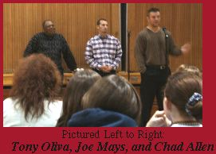

Thoughts and Ponderings from Mr. Buker
Posted Friday, February 25, 2000
Be sure to check out Mr. Buker's page, where he has begun sharing daily thoughts and musings. Will he have the stamina to keep to this torrid pace? Keep checking back!
In Other News...
At the High School:
High School Career Center: Central Lakes College to host College Experience Day
Mr. Hinnenkamp: Life Smarts Champs!
Mr. Johnson: Camp Oz
At Lindbergh:
Ms. Gratke: Grad Standards Tests Coming
Mr. Swenson: Civil War Unit Beginning
Deadline Near for Model United Nations Registration
Posted Wednesday, February 23, 2000
Mr. Hinnenkamp's page contains information about Model United Nations registration, as well as updates on Knowledge Bowl.
In Other News...
High School:
Mr. Mushel: Update on student teacher, Ms. Zemke.
Lindbergh:
Ms. Sharon: Gives congratulations to Danielle Fenske for taking the Gold Medal at the Elk River Speech Meet; also, information about St. Patrick's Day coming!
Middle School:
Ms. Blaine: Notes that the "Faculty and Staff" page has been posted on the Middle School Web Site.
Middle Level Education Week Coming March 6-10
Posted Wednesday, February 16, 2000
Mr. Girtz has a link to a feature on the Middle School site about Middle Level Education Week, which is coming up March 6-10.
In Other News...
At the High School:
Mr. Condit: Scholastic Art Award Results
Mr. Johnson: Blood Pressure Clinic Held
Mr. Nelson: Upcoming Band Events, more
Mr. Wilger: [NEW SITE!] Classroom Assignments
At Lindbergh:
Ms. Zak: Ideas for Enrichment Projects
At Middle School:
Ms. Bolan: CD-ROM Creation
All District Schools Now Represented Online!
Posted Friday, February 11, 2000
For the first time, all five Little Falls District school buildings have individual web sites either fully developed or in process. Check out the new Lincoln Elem. web site, the Lindbergh Elem. site (in progress), Dr. S.G. Knight, the Community Middle School, and Community High School's FlyerNet.
In Other News...
You can check this Morrison County Record article for an update on the Gov's trip through Central Minnesota.
The "District Calendar" link on our site is now being updated . . . well, at least some of the upcoming dates have been posted, with more to follow!
I've updated my page (isn't funny how the webmaster is always the last to update his own web page?) with some preliminary musings about curricular projects to be created around Election 2000.
The High School Media Center page has notes about the creation of a wireless network covering a large section of the High School building.
Ms. Lois Anderson has added a link to a student-created web site about the "Steps Towards Independence" program.
Mr. Bellig's page tells of Tulibee Trip 2000.
Mr. Goodrich has posted information for parents who would like to access grade reports of students in his classes.
At the Middle School, Mr. Girtz has updated his page with information about his involvement in a play in St. Cloud.
Ms. Blaine's page has been updated with links to the Twins Caravan page and the Middle School Web Page.
Ms. Bolan has info about her students' HyperStudio Portfolios.
At Lindbergh, Ms. Gratke writes about fundraising efforts and a trip to the ballet.
Also at Lindbergh, Mr. Telander lists information about student involvement in the MathFax competition
Gov. Ventura Visits Central Minnesota
Posted Wednesday, February 09, 2000
Hot off the Presses!
Paul Burrows, a Junior on assignment for the Flyer Media Productions' Morning Report, traveled to Dixie's Diner in Royalton today to gather photographs of the Gov's travels through our area.
Click here (or on Jesse's picture) for a full photo thumbnail sheet of the images he brought back! (When the thumbnail sheet loads, just click on any image to see the full-size picture).
Twins Caravan Stops at Middle School!
Posted Monday, February 07, 2000

Check out the Little Falls Community Middle School page for a link to coverage of the 200 Twins Caravan stopping in for a visit.
In Other News...
The High School Career Center has information on scholarship opportunities, as well as Dunwoody Institute offering information nights.
At Dr. Knight, Ms. Maschler has posted articles on fourth grader's Inventor's Research and a Magnets and Electricity Unit.
At the Middle School, Mr. Heerts has details of the Jr. High Choir Festival being set for March 28.
Lucky Lindy Knowledge Bowl Meet Feb. 5
Posted Thursday, February 03, 2000
Mr. Hinnenkamp has posted information about Knowledge Bowl and the upcoming Lucky Lindy meet.
In Other News...
Look for updated news and/or links on the following faculty pages:
Mr. Johnson: Updated Health Links
Ms. Pohlman: February math class news.
Ms. Maschler: 4th Grade Inventor's Research
Mr. Gomez: Updated Classroom Schedules
Ms. Gratke: Valentines, Fitness, and Conference schedule
Ms. Sharon: I Love to Read Month News, plus Harry Potter info
Mr. Heerts: Ancient Instruments Lecture